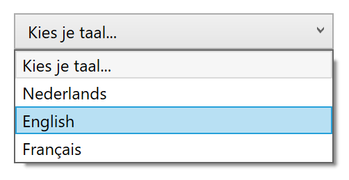
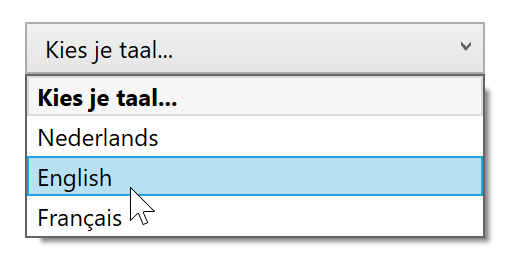

Doel: werken met ComboBox/ComboBoxItem en SelectionChanged event.
Lees vooraf de theorie over de ComboBox.
StackPanel met een ComboBox en een TextBlock (16px, SemiBold).
ComboBox een ComboBoxItem toe met waarde "Kies je taal..."; selecteer het met de IsSelected property;
InitializeComponent():
languages met drie waarden: "Nederlands", "English", "Français"foreach voor elke taal een ComboBoxItem toeSelectionChanged event toe aan de ComboBox, waarmee je in de TextBlock een begroeting toont naargelang de gekozen taal: Hallo, Hello of Bonjour. Gebruik een switch-case op de taal, geen if-else-if.
ComboBoxItem in Bold; zet de andere items terug op Normal.

